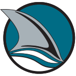
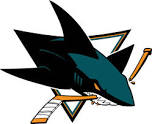
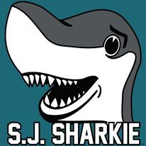

The Sharks' first alternate logo, showing a shark fin emerging from water (1991-2007).

The Sharks' current logo.

The Sharks' mascot, S. J. Sharkie.
 Captain, Joe Pavelski, accepting the Western Conference Trophy (2016).
Captain, Joe Pavelski, accepting the Western Conference Trophy (2016).
Captain, Joe Pavelski, accepting the Western Conference Trophy (2016).
The San Jose Sharks are a professional ice hockey team based in San Jose, California, United States.
They are members of the Pacific Division of the Western Conference of the National Hockey League (NHL).
They play their home games at the SAP Center in San Jose, which is known locally as the 'Shark Tank.'
The Sharks were founded in 1991 and were the first NHL franchise based in the San Francisco Bay Area since the California Golden Seals left in 1976.
They have won six division titles and one conference championship.